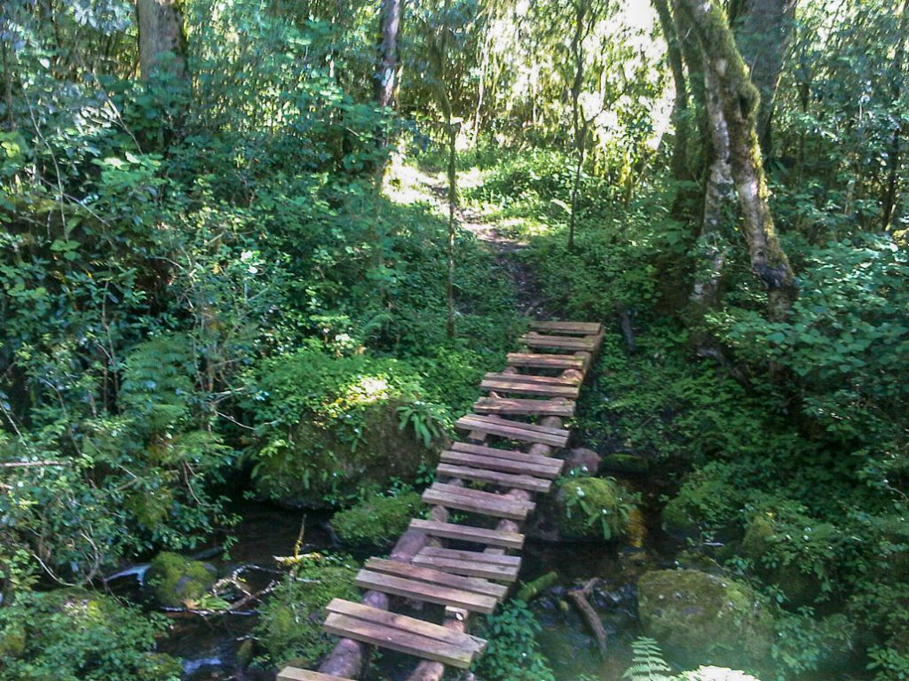

Magoebaskloof
This checklist consits of all recorded birds found in Magoebaskloof, South Africa.

West Coast
This checklist consits of all recorded birds found in the West Coast, South Africa.
This checklist consits of all recorded birds found in Magoebaskloof, South Africa.
This checklist consits of all recorded birds found in the West Coast, South Africa.